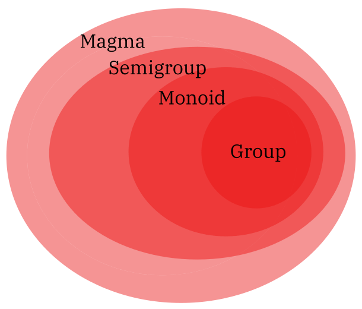
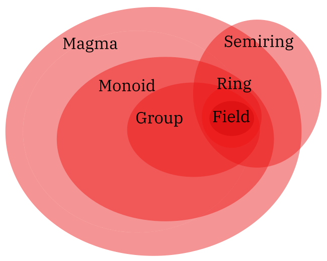

Lean is a functional programming language and a proof assistant. I suspect that more people are familiar with the former than the latter; but a proof assistant is what it sounds like: some software or a suite of software that helps the user write formal proofs and verify their correctness.
Why such a thing is possible is far outside of the scope of this post, although there exist rich and long-lived theoretical underpinnings such as the Curry-Howard correspondence and typed lambda calculi which one could spend their entire life studying.
There are a variety of resources for learning to Lean online, which I’ll include at the end of this post.
But since Lean’s target audience tends to be mathematicians and computer scientists (or both), and since it draws on a lot of deep theoretical concepts, it’s hard to simply “pick it up” as you would a language like Python. And, as well-written as all the previously mentioned resources can be, it can still be overwhelming to shuffle through the documentation at the beginning.
So, this post is a walkthrough where we define basic algebraic structures and hopefully gain some intuition about formalizing mathematical definitions. It’s by no means a comprehensive or even functional introduction to Lean. I cover a lot of things very shallowly and it’s my hope that this rouses curiosity more than anything else, as you get your bearings with this powerful language.
I don’t assume any background in abstract algebra, and provide all definitions. If you’ve ever read or written a program before, it might be a smoother experience for you, but this is not a necessary prerequisite either. It would be nice if you have Lean installed on your computer (the installation page is here), or perhaps the live-lean tab open in your browser, so you can practice writing the examples; there are also some simple, and of course optional exercises.
Defining a pretty tame variable (like a natural number) is relatively familiar.
def var : Nat := 4Read the above as: define a variable named var to be of
type Nat (read the colon as “of type”) and to hold the
value 4. In mathematics, the symbol := means
definition.
Negative numbers and fractionals are similarly straightforward.
def a : Int := -2
def b : Float := 1/3This is cool and all, but what about more complicated data
structures? What if we want to express a point, or a coordinate on a
Cartesian plane? Lean lets us define new types pretty easily, seen
below, using structure. Note that types should be in
uppercase to distinguish them from variables, similar to Haskell.
structure Point where
x : Float
y : Float
deriving ReprIt’s reminiscent of structs in C, where a variable can hold fields of
information. The deriving Repr part just lets us print the
Point we instantiate, like this:
def origin : Point := { x := 0.0, y := 0.0 }
#print origin
/- def origin : Point := { x := 0, y := 0 } -/The message in the block comment /- -/ is what you
should see in the Lean prompts on the right-hand side of the screen.
But there are a lot of different numeric types in Lean
(Int, Nat, Float,
Real, and so on. What if we don’t necessarily care what
type of number our Point can hold, as long as both our
x and y are the same type? This sort of
flexibility is called “polymorphism”, and is readily supported by
Lean:
structure PPoint (α : Type) where
x : α
y : α
deriving Repr
def intPoint : PPoint Int := { x := -1, y := 10 }
def natPoint : PPoint Nat := { x := 0, y := 1 }
def fPoint : PPoint Float := { x := 1.2, y := 54.1 }Try printing each, and maybe come up with a PPoint which
takes type Real. Maybe a point with an x-value of π and a y-value of e? The world is your oyster (by
which I mean the world is ℝ-valued).
When we see a type in parentheses in the definition of a structure or
a function, we can read it as “takes an argument of [that type]”. For
example, in the above case, we see that the structure
PolyPoint takes an argument of α, which is a
type. In Lean, generic placeholder types are frequently referred to with
Greek letters. You can type α as \a into a
text editor that supports writing in Lean.
Groups are an important algebraic structure, likely the first introduced in an abstract algebra course. Formally, it is defined as a set G with a binary operation (or a law of composition), say ⋅, written (G,⋅). The operation which follows a few axioms:
To return to Earth for a bit, some examples of groups are the integers under addition, the real numbers under multiplication, and the symmetries of a triangle under composition. Convince yourself that the group axioms hold for all of these. Particularly, what is the identity element of each of these groups? What do inverses of elements look like?
Given a formal definition, it is sometimes not that bad to transcribe it, almost word-for-word into Lean:
structure myGroup (α : Type) where
op : α → α → α
idn : α
inv : α → α
assoc : ∀ (a b c : α), mul (mul a b) c = mul a (mul b c)
op_idn : ∀ (a : α), mul a idn = a
op_inv : ∀ (a : α), mul a (inv a) = idnBut while this is a valid implementation of a group, it isn’t the most extensible or illustrative.
This is because groups don’t exist in a vaccum. They are a single part of a hierarchy of algebraic structures.
At the highest level is a structure that is a set with only a closed binary operator defined. “Closedness” or closure in math simply means that if we use two elements belonging to a certain structure in a binary operation, the result of that binary operation must still belong to that structure. It need not be associative, and we don’t need identities or inverses or any of that. This is a magma.
If we have a magma with an operator that is also associative, this is a semigroup.
A semigroup with an identity is called a monoid.
And finally, a monoid with inverses is a group.
The higher structures contain the lower structures such that every group is a monoid, every monoid is also a semigroup, and so on.

(There are other structures, like quasigroups and loops, each with their own constraints, but these aren’t as relevant.)
We can see that it might be a better idea to take into account the larger picture, the “family tree” of these structures, when implementing groups. Something you might do is define the simplest structure—a magma—first, before extending it to get to a group.
structure myMagma (α : Type) where
mul : α → α → α
structure mySemigroup (α : Type) extends myMagma α where
assoc : ∀ (a b c : α), mul (mul a b) c = mul a (mul b c)Hopefully, defining a monoid and a group is more straightforward from here on out, now that we have some scaffolding.
structure myMonoid (α : Type) extends mySemigroup α where
id : α
mul_id : ∀ (a : α), mul a id = a
structure myGroup (α : Type) extends myMonoid α where
inv : α → α
mul_inv : ∀ (a : α), mul a (inv a) = idIt might be illuminating to see what the developers have done in mathlib. Reading the source as if it were documentation can be helpful when implementing types, even if what you’re trying to build doesn’t exist in mathlib. But we’re lucky that most of undergraduate algebra has already been formalized, so let’s go check it out.
If you go straight to GitHub for the source
code of mathlib4 and find the definitions of these structures, a lot of
them will look quite empty with only a single line beginning with
#align as their definition. This just tells Lean to
fallback on the mathlib3 definitions, which you can still view in the mathlib3
documentation.)
class Group (G : Type u) extends DivInvMonoid : Type u
mul : G → G → G
mul_assoc : ∀ (a b c : G), a * b * c = a * (b * c)
one : G
one_mul : ∀ (a : G), 1 * a = a
mul_one : ∀ (a : G), a * 1 = a
npow : ℕ → G → G
npow_zero : ∀ (x : G), Monoid.npow 0 x = 1
npow_succ : ∀ (n : ℕ) (x : G), Monoid.npow (n + 1) x = Monoid.npow n x * x
inv : G → G
div : G → G → G
div_eq_mul_inv : ∀ (a b : G), a / b = a * b⁻¹
zpow : ℤ → G → G
zpow_zero' : ∀ (a : G), DivInvMonoid.zpow 0 a = 1
zpow_succ' : ∀ (n : ℕ) (a : G), DivInvMonoid.zpow (Int.ofNat n.succ) a
= DivInvMonoid.zpow (Int.ofNat n) a * a
zpow_neg' : ∀ (n : ℕ) (a : G), DivInvMonoid.zpow (Int.negSucc n) a
= (DivInvMonoid.zpow (↑n.succ) a)⁻¹
mul_left_inv : ∀ (a : G), a⁻¹ * a = 1There’s a lot to unpack, so let’s focus on a handful of the things that stand out. One is that the mathlib developers also take into account the hierarchy of algebraic structures. I’ll include the “type signatures” of each of the structures for posteriority, though I’ll link directly to their definitions as well. Let’s start from the bottom of the hierarchy.
We can see that the mathlib Group
extends DivInvMonoid:
class Group (G : Type u) extends DivInvMonoid : Type uwhich itself extends Monoid
with the Inv and Div functions:
class DivInvMonoid (G : Type u) extends Monoid , Inv , Div : Type uand which itself extends Semigroup:
class Monoid (M : Type u) extends Semigroup , One : Type uwhich (finally, we’re at bedrock) extends the generic operation Mul:
class Semigroup (G : Type u) extends Mul : Type u Mul basically refers to what
we’ve defined as a magma.
class Mul (α : Type u) : Type u
mul : α → α → αIsn’t it satisfying to see the pieces fit together?
The other details that they have provided have to do with group multiplication, i.e. given an element a in a group G with operation ⋅, then “multiplying” a by itself n times: a ⋅ a ⋅ a ⋅ ⋯ ⋅ a can be written as an.
Another important point is that Lean has both additive and multiplicative groups (AddGroup and Group respectively). Though the same group axioms hold for both of these types, they differ notationally, and arise from slightly different structures.
Now for the second exhibition in our menagerie of algebraic structures. Ring theory often forms the second or third part of an Abstract Algebra course, since defining a ring requires you to know what a group is. Their definition follows:
A ring is a set R equipped with two binary operations, addition + and multiplication ⋅, written (R,+,⋅), satisfying three sets of axioms:
The classic example is the integers under addition and multiplication: (ℤ,+,⋅). A slightly more complicated example is the set of all n × n matrices with entries from ℝ under matrix addition and multiplication. The former is a commutative ring, the latter is a noncommutative ring, since matrix multiplication does not commute.
Is (ℕ,+,⋅) a ring (where ℕ stands for the set of all natural numbers)?
Try defining a ring using techniques similar to what we did for our first attempt at a group implementation, a sort of word-for-word transcription. Then, we’ll check out the mathlib implementation and try to unpack it.
structure myRing (α : Type) where
add : α → α → α
mul : α → α → α
neg : α → α
zero : α
one : α
add_assoc : ∀ (a b c : α), add (add a b) c = add a (add b c)
add_inv_eq_zero : ∀ (a : α), add a (neg a) = zero
add_zero : ∀ (a : α), add a zero = a
add_comm : ∀ (a b : α), add a b = add b a
mul_assoc : ∀ (a b c : α), mul (mul a b) c = mul a (mul b c)
mul_one : ∀ (a : α), mul a one = a
distrib : ∀ (a b c : α), mul a (add b c) = add (mul a b) (mul b c)I use zero to refer to the additive identity and
one to refer to the multiplicative identity, since
mul_id and add_id seem a little ambiguous to
me. But in your implementation, it’s ultimately your call. You could
call it pizza, and although it might cause confusion to the
reader, it would still be a ring.
We could also extend the definition of a group into that of a ring. We would just have to define another binary operation and its corresponding axioms, and the distributive property.
So how does mathlib do it? Like before, I’ll include the type
signatures of all our intermediary structures, and the entire definition
for Ring.
Mathlib starts from AddCommMonoid and
Mul:
class AddCommMonoid (M : Type u) extends AddMonoid : Type uThis makes sense; we attempt to treat the
abelian-group-under-addition part of the ring with
AddCommGroup, arising from the more general
AddCommMonoid, and introduce a very generic multiplicative
operation with Mul, to get to a
NonUnitalNonAssocSemiring. In a
ring, elements that are invertible with respect to multiplication are
called units, so a non-unital ring is one whose
multiplicative monoid does not have inverses.
class NonUnitalNonAssocSemiring (α : Type u) extends AddCommGroup , Mul : Type uThen, we extend the NonUnitalNonAssocSemiring,
introducing associativity to make it a
NonUnitalSemiring.
class NonUnitalSemiring (α : Type u) extends NonUnitalNonAssocSemiring : Type uNext, we extend the NonUnitalSemiring into a
Semiring, introducing a multiplicative identity with
One.
class Semiring (α : Type u) extends NonUnitalSemiring , One , NatCast : Type uAnd finally, a Ring is a Semiring with
negation, group-ifying our additive operator (okay, abuse of vocabulary,
since an operation does not a group make, but I hope it gets the point
across); so we extend it with Neg and the operator
Sub:
class Ring (R : Type u) extends Semiring , Neg , Sub , IntCast : Type uAs expected, just like groups, rings don’t exist by themselves in a vaccum either. Semirings don’t require additive inverses, rngs don’t require a multiplicative identity (did you spot the hilarious joke that i stands for the multiplicative identity, so a ring without an i is just rng?), and rings also generalise a notion called a field.
I think of fields as a “stricter” version of rings where the multiplicative operation must satisfy all the properties of an abelian group. You can take a look at how fields are defined in mathlib. The definition is by far the longest, since it’s the most complex structure we’ve come across.
Our previous picture of the group family tree has now expanded. At the top is our broadest structure, a magma. Our main intermediaries are groups and rings, before we arrive at the bottom, our most specialised structure: a field.

The broadest way we might classify rings, groups, fields, etc, is with the concept of an algebraic structure, defined simply as a set with a collection of operations and axioms. The next, higher level of classification might be a variety, which describe a class of algebraic structures satisfying certain axioms. Groups, abelian groups, monoids, rings, and more all form their own varieties of algebras.
Perhaps we want to take an even broader look, by treating
each variety and their maps as a whole. Then, we could theoretically
define maps (aka functors) from the variety of rings to the
variety of groups. This pushes us into the territory of dark
magic category theory. See ncatlab’s page on the
computational trilogy for a deeper dialogue on category theory, type
theory, and programming language theory. I know even less about
category theory than I do formal verification, so I won’t proceed, both
for your sake and mine.
You might have noticed when we define a binary operator, like
mul : α → α → α, and we want to then mul two
things a and b together, we don’t write
a mul b as you might expect, but rather
mul a b. This is because Lean is a functional programming
language, so the names of functions come first, then their arguments.
You might then ask, “why isn’t it mul(a,b), so we can
better distinguish between functions and arguments?” This is a good
question with a sprawling answer that mostly consists of “it’s
tradition”, but there’s plenty of historical detail embedded in such a
representation. See lambda
calculus for said detail.
Anyways, mul a b is ugly and not very intuitive for
non-computer scientists. Also, it gets confusing when we have to write
nested expressions; see our associative law.
mul (mul a b) c is not the most fun thing to parse for
human eyes. Luckily, Lean lets us customize our operators. What we want
is something like a * b, where the operator is
infix. But * is already taken; it means
multiplication for many different numeric types. Let’s find our own.
It varies among textbooks, but Dummit and
Foote use a little star ⋆ as their group operation.
It’s cute; let’s steal it. (You can write it as \star.)
Simply add the one of the below lines after your definition of your
group.
infixl:65 `⋆` => myGroup.op
/- or -/
infixr:65 `⋆` => myGroup.opinfixl and infixr do the expected thing of
defining an operation with an infixed symbol, left-associative and
right-associative respectively. A left-associative operator is like
addition, +, while a right associative
operator would be like exponentiation, ^.
We put a number after the colon to quantify the parsing precedence of the operator; in other, mushier words, how strongly it attaches itself to its arguments. More detail about parsing precedence can be seen here.
Now, we can write mul a b as the much more familiar
a ⋆ b, and the nasty mul (mul a b) c has
(a ⋆ b) ⋆ c.
Isn’t it adorable? There’s a constellation in our Lean file… I see why people rave over Dummit & Foote now.
Remember way back in the beginning of this post when I said I’d link some helpful texts to learn Lean with? Here they are:
Lean got its start in Microsoft Research, so it’s no surprise that Visual Studio Code is the main tool of choice for writing Lean. It is very well-supported. However, there are other options for those of us who like to spend copious amounts of time on tweaking and tinkering with our text editors:
I use lean4-mode and it works pretty flawlessly, though it is more barebones than what the Neovim plug-in offers out of the box (and the Neovim plug-in seems faster, too!).
I’d like to make a few more posts on abstract algebra and Lean. There’ll likely be more walkthroughs concerned with defining sub-structures (namely subgroups and subrings), and proving basic theorems, like the uniqueness of inverses and the identity, which hopefully will explore other capabilities of Lean as a programming language.
When I do make those posts, I’ll put them here!
If there are any errors in any of the math or the programming above, please let me know. In fact, if you have any constructive criticism at all (I know this article was overlong, and maybe included unecessary things), my contact information is in my About page.